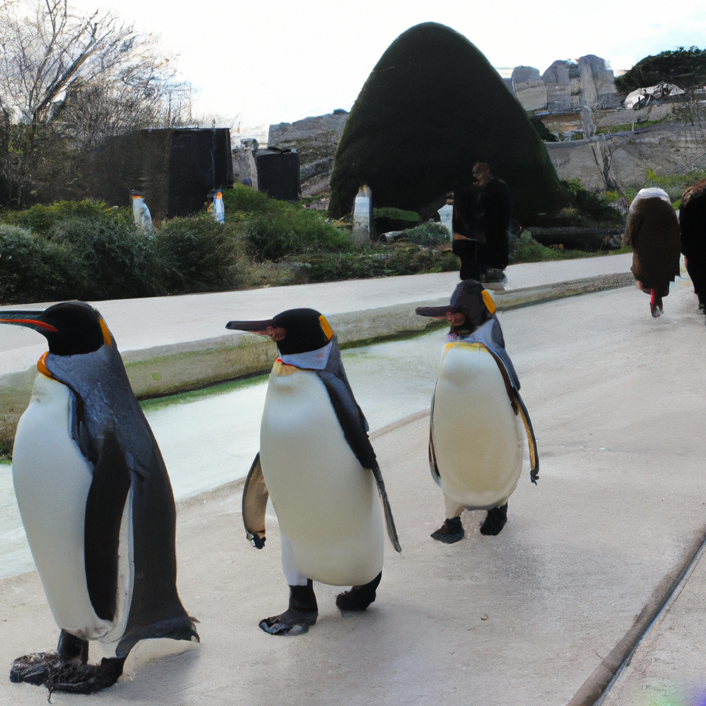
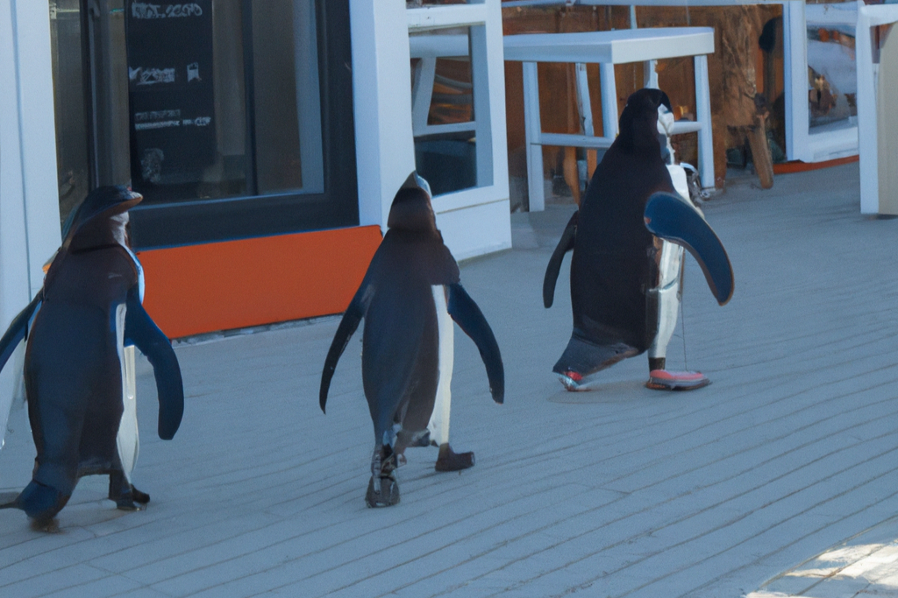
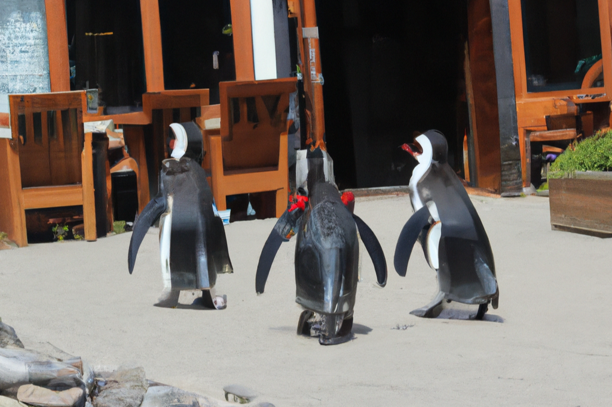

Un grupo extremista animalista libera 113 pingüinos del Zoo de Vincennes

Cuidadanos parisinos fotografían a los pingüinos liberados
ALESSANDRO RAMPAZZO / AFP
Agencias
Toulouse
5 miembros del grupo animalista conocido como Ankera se han infiltrado durante la esta noche en el zoo 'Zoo de Vincennes'. Una vez dentro del establecimiento han liberado los 113 pingüinos que allí se encontraban. La policía aún no ha podido identificar a los 5 miembros, pero el zoo ha puesto una denuncia al grupo animalista. La OOCA (Organisme Officiel de Contrôle des Animaux) está trabajando sin descanso en reunir a los 113 pingüinos.
Mientras tanto los cuidadanos parisinos se despiertan y por la ventana pueden ver a sus nuevos vecinos. Miles de imágenes de pingüinos han inundado las redes sociales de estos ciudadanos. Las autoridades expedido un comunicado en el que ruegan a la población que tenga extremo cuidado con estos pingüinos, que no les den de comer, que no los toquen y que tengan cuidado al circular con el coche. El OOCA estima que tardará por lo menos un par de días en terminar de localizar a los 113 pingüinos.
Ya se han reportado al menos 3 pingüinos heridos por personas que trataban de sacarse un inocente "selfie" con ellos. Así como dos locales del centro de París: la Poissonnerie Ledreux y la Poissonnerie Daguerre Marée, que afirman que los pingüinos se han comido varias cajas de sardinas y bonito que tenían almacenadas en la calle
El zoo Zoo de Vincennes a recibido ya varias denuncias de maltrato hacia sus animales. Las autoridades, al ignorar estas denuncias, seguramente hayan alentado a los miembros de este grupo animalista a realizar este acto de vandalismo contra conocido zoológico francés.
Por otro lado, tras este incidente, parece que las autoridades han prometido revisar estas denuncias y el zoo teme que esto suponga su cierre. Muchos parisinos no están de acuerdo con el cierre del zoo pues "es una tradición familiar ir con los hijos al zoo el domingo por la mañana". Por otro lado, también son muchos quienes argumentan que el zoo lleva mucho tiempo haciendo las cosas mal y que ya es hora de que se tomen medidas incluso aunque esto signifique el cierre del zoo.
Existen unos artilugios, muchos de ellos calificados de juguetes al estilo de un coche teledirigido, que están atemorizando a las tropas rusas en Ucrania. Esos aparatos son los drones voladores, muchos de ellos de línea doméstica, que debidamente adaptados son capaces de dejar caer una carga explosiva que puede ir de los 200 ó 500 gramos hasta los ocho o diez kilogramos.
Ejemplos del uso de estos drones en el frente de batalla pueden encontrarse fácilmente en las redes sociales, especialmente en YouTube. Sin embargo, para llegar a este tipo de uso militar ha habido previamente una planificación que ha pasado por la jerarquía militar y por el cuerpo de ingenieros. Los ucranianos cuentan con diversos laboratorios o talleres donde preparan los drones y donde, a través de impresoras 3D, fabrican estabilizadores de cola para los proyectiles que se dejan caer desde los aparatos para que sigan una trayectoria lineal y caigan sobre los objetivos.
“Muchos de estos aparatos los puedes incluso comprar en jugueterías, pero a la vez son capaces de lanzar un explosivo con el poder de detener el avance de una columna de soldados por el pánico que desata en la líneas la llegada de un proyectil que no escucharon llegar ni saben muy bien de dónde viene”, explica Daniel Santos, ingeniero civil, responsable técnico de la empresa Octocam-Maps, radicada en la localidad barcelonesa de Rubí. La compañía está altamente especializada en el uso de drones con fines comerciales.
Pingüinos junto a la Torre Eiffel
AFP
Pero Daniel Santos, durante su trayectoria profesional, ha desarrollado proyectos de seguridad en los que se integraba el uso de estos aparatos como herramienta táctica. Con el BOPE, el grupo de asalto de élite de la policía brasileña, incorporó la utilización de drones en operaciones como la entrada en determinadas favelas hostiles.
Los ucranianos están usando ciertos modelos muy modernos, algunos provistos incluso de cámaras de alta precisión dotadas hasta de sensores térmicos, que pueden costar entre 10.000 y 20.000 euros. Pero más allá de estos equipos más sofisticados y con una capacidad de carga de varios kilos, como por ejemplo el Matrice 300 RTK, las fuerzas ucranianas cuentan con enjambres de drones mucho más pequeños, con rangos de precio por debajo de 1000 euros, con los que se pueden permitir el lujo de usarlos, incluso, como kamikazes.

Así amanecen las calles de París
AFP
“Están usando incluso modelos obsoletos para evitar ser localizados más fácilmente. No es que queden muchos en el mercado, pero todavía quedan ciertos stocks en algunos lugares. Su navegación es más manual y menos susceptibles a la interceptación “, comenta Santos.
Rusia dispone de material para defenderse del uso de los drones, especialmente cuanto más sofisticados son los aparatos rivales. Así, y siempre que la unidad blanco del ataque cuente con esos equipos, se puede por ejemplo detectar desde donde ha despegado un drone por el rastro electromagnético que ha dejado e inmediatamente, a veces en cuestión de pocos segundos, lanzar un obús con gran precisión sobre ese punto. Es por ello que se aconseja vivamente a los pilotos que una vez iniciado el despegue, se alejen tanto como puedan del punto desde el que inició el ascenso el aparato.
Un día más en las calles de París
E. FIGUEREDO
También existe, y siempre que la unidad atacada vaya provista de esos equipos, la posibilidad de usar aparatos inhibidores que los desorienten o los dejen fritos, como se dice en el argot. “Pero son tantas las frecuencias que usan los drones, que las columnas deberían llevar muchísimas antenas”, explica el ingeniero Santos. Tendrían que llevar muchas antenas de diferente frecuencia o equipos tan especializados y caros que hace imposible distribuirlos de forma generalizada a las unidades.
V
El kamikaze persa
Rusia usa drones iraníes
Las tropas rusas están tratando de pagar a los ucranianos con la misma moneda. Desde hace unos días, las tropas bajo el mando del Kremlin están utilizando un dron kamikaze de fabricación iraní, llamado Shahed-136, que las fuerzas de Rusia han rebautizado como Geranium 2. Kyiv asegura que este tipo de aparatos han estado utilizándose para llevar a cabo ataques contra la ciudad de Odessa y que en ellos habrían muerto civiles. Los Shahed-136 tienen la particularidad de que se detona su carga explosiva al impactar contra el objetivo.
La gran mayoría de los drones de pequeño y mediano rango –los realmente grandes como el Predator, quedan fuera de este grupo- están fabricados en China y de ellos, casi la totalidad los son por la firma DJI. Fue tal la presión sobre esta compañía desde el inicio de la invasión que ya en el mes de abril, el gigante chino de los drones detuvo la venta de sus productos a países como Rusia y Ucrania para evitar el uso de sus aparatos en combate. "DJI detesta cualquier uso de nuestros drones para causar daño y por ello hemos suspendiendo temporalmente las ventas en estos países para ayudar a garantizar que nadie use nuestros drones en combate", dijo un portavoz del fabricante.
Sin embargo, no hay más territorios excluidos por DJI para su exportación de aparatos. Así, países tan cercanos a Ucrania como Polonia, Eslovaquia, Hungría o Rumania siguen recibiendo pedidos con drones o repuestos sin problemas. Lo mismo ocurre con vecinos de Rusia como Bielorrusia, Kazjistán o Azerbayán.
Las calles de París se inundan de pingüinos
E. FIGUEREDO
Además del ya mencionado Matrice 300 RTK, esta especie de guerra low cost de los drones en Ucrania, está protagonizada por la serie MAVIC 2 y 3 y por la serie Phantom.
Los parques de París tienen un nuevo invitado
E. FIGUEREDO
Los drones no cambiarán probablemente el curso de la guerra a diferencia de lo que han hecho el lanzacohetes Himars, el misil antirradares AGM-88 HARM, o el obús M777, pero se ha convertido “una herramienta del miedo muy eficaz”, explica el experto en drones.
Existe un tipo más de aparato, conocido como los Drone Rissing, que son artilugios diseñados para ir a velocidades superiores a los 100 kilómetros por hora, muy pequeños, muy ligeros, con poca capacidad de carga y carentes de sistema de navegación autónoma que se sospecha que han sido utilizados esporádicamente en el frente como drones kamikazes.

Desaparece comida en locales de París, los culpables: pingüinos
E. FIGUEREDO
Pueden ser pilotados a través de un mando clásico o con gafas inmersivas. Tienen muy poca autonomía de vuelo, una media de dos o tres minutos, pero su altísima velocidad y la sencillez de sus equipos de navegación permiten al piloto ponerse fácilmente a salvo dada la larga distancia que el dron recorre en poco tiempo. No puede hacer un gran daño, pero sí crear un enorme desconcierto, especialmente si se lanzan en enjambre.
![Russians, mostly men, lineup to get a Kazakh registration after crossing the border into Kazakhstan from the Mariinsky border crossing, about 400 km (250 miles) south of Chelyabinsk, in Russia, to Kazakhstan's town Uralsk, 1400 km east of Astana, the capital of Kazakhstan, Wednesday, Sept. 28, 2022. Russians have crossed into Kazakhstan in the week since President Vladimir Putin announced a partial mobilization of reservists to fight in Ukraine, Kazakh officials said Tuesday, as men seeking to avoid the call-up continued to flee by land and air into neighboring countries. (AP Photo/Denis Spiridonov)](https://www.lavanguardia.com/files/image_80_83/uploads/2022/09/28/633494de6c063.jpeg)